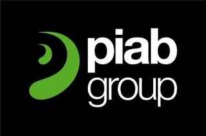

Trade Mark Journal No.2025/014 4 April 2025
WO0000001831808 (7,9,37)
Office of origin: European Union Intellectual Property Office (EUIPO)
Date of International Registration:20 June 2024
Date of designation in the UK:
20 June 2024

The mark contains the colours black, green and white.
International priority date claimed: 15 March 2024
(European Union Intellectual Property Office (EUIPO))
(018999771)
- Class 7
- Pneumatic transport systems; pneumatic transporters; pneumatic conveyors; pneumatic tubes; pneumatic tube conveyors; pneumatic pumps; pressure regulators being parts of machines; hydraulic pressure regulators being parts of machines for vacuum pumps, vacuum transporters and air-driven ejectors; ejectors being parts of machines; valves being parts of machines; valves, namely parts of vacuum and pneumatic transport system machines; pressure switches [parts of machines] and sensors for monitoring, controlling and regulating vacuum transport systems and pneumatic transport systems being sold as a unit with manufacturing machines; vacuum switches [parts of machines]; vacuum filters [parts of machines]; vacuum grippers; vacuum pumps; vacuum transporters; vacuum gripper systems; vacuum gripping systems comprised of foam or suction pads, blowers, air driven ejectors, vacuum pumps, vacuum grippers, vacuum transporters, vacuum conveyers; suction pumps; air suction machines; vacuum suction machines; mechanical hoppers and parts and fittings for the aforementioned goods; pneumatic transport systems consisting of fluid driven ejector-pumps, electric vacuum pumps, vacuum conveyors and feed-hoppers; level compensators being parts of machines; mounting brackets to vacuum transport systems; mufflers [parts of machines]; brackets for suction cups [parts of machines]; ball joints [parts of machines]; ball joint fittings [parts of machines]; parts of machines namely, suction cups for lifting devices; vibrators [machines] for industrial use; sealing joints [parts of machines]; installations for the bulk handling of pulverulent materials, powder handling apparatus [machines], sifting machines, filling machines, mixing machines; material handling equipment used in manufacturing, namely, grippers, foam vacuum grippers, foam vacuum grippers for the wood industry, robotic arms for industrial purposes, gantries, pick and place industrial robots, wood gantry robots, stacking and destacking machines [other than fork-lift trucks], air blowers, centrifugal blowers, power-operated blowers, hydraulic rotary manifolds (part of machines) and palletizers; belt conveyors and other machine and pneumatic conveyors; elevators; handling apparatus for loading and unloading; automatic handling machines; roller bridges, cranes (lifting and hoisting apparatus); lifting devices; lifting apparatus; vacuum pumps (machines) and other pumps (machines); mechanically operated hand-held tools and machine tools; other machines, apparatus and devices for lifting including belts, parts and fittings thereto included in the class.
- Class 9
- Software and software applications for mobile phones or other handheld devices to gather data such as cycle time and energy consumption and for condition monitoring, all related to vacuum system, machines and equipment; electronic and electric control units for monitoring, controlling and retrieving data from vacuum system, machines and equipment.
- Class 37
- Repair/maintenance, all relating to vacuum transport systems; installation services, all relating to vacuum transport systems; installation, repair and maintenance relating to installations for the bulk handling of pulverulent materials, powder handling apparatus [machines], sifting machines, emptying machines, mixing machines, and relating to parts and accessories for the aforesaid installations.
PIAB AB
Representative: BRANN AB, Sveavägen 63, SE-113 59 Stockholm, SWEDEN